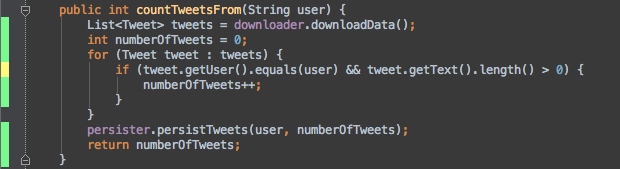
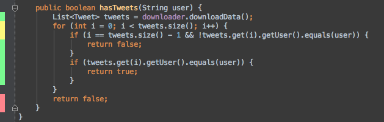

Feedback Loops - Short, Continuous and ?
I was working one friday afternoon at the ThoughtWorks Dallas office, remoting into the machine at the client site and pairing with a fellow developer. Internet connection speeds here in the United States are pretty amazing and it did not take long to connect to the remote machine and start coding in eclipse. This has happened to me before but I never thought much about it. Even the slightest of lag between a keystroke and the letter appearing on the display is slow feedback. I personally am not a very accurate typist, I make errors while typing but constantly looking on the screen to see what I typed, getting instantaneous feedback on whether it was correct or not helps me in fixing the problem quickly. Imagine if there was a delay of a second in this scenario i.e. when you hit a key and when the letter appeared on the screen. How inconvenient would that have been.
I am just curious and intrigued about the importance of efficient, streamlined feedback loops in our lives and professions. As a software developer, I have seen so many practices - fail fast systems, fail fast techniques, fail fast language features, continuous integration, continuous delivery and deployment, all of which have one common theme that they strive towards. Short and continuous feedbacks. Figuring out problems sooner than later, finding issues in smaller deltas rather than mining them in a sea of changes. Similar to software development, other activities in our daily lives become much less stressful and streamlined if we consider involving short, continuous and honest feedbacks. How? I know it sounds preposterous but I will explain all of it below.
Since my profession is developing software and I do not know the nits and grits of other fields, I will take a plunge into software development and then discuss some stuff related to other activities pertaining to our daily lives.
Software Development
Kent Beck, who is the pioneer of the Test Driven Development technique and inventor of the JUnit framework says that he just rediscovered the idea. “The original description of TDD was in an ancient book about programming. It said you take the input tape, manually type in the output tape you expect, then program until the actual output tape matches the expected output”. The most modest of man that he is, I would still say that real innovations come from smart people making the most obvious decisions. What I always feel is having a formal name for the technique and having a structure around it always helps the wider community to understand and follow it. It looks like TDD had been around but having a formal name, techniques and tools around it helped the software development community see the real benefits of it.
There are several ideas that evolve while developing software with TDD. I just want to lay an emphasis on the feedbacks. TDD is an amazing technique to enable short and continuous feedback loops. It helps you evolve your design in a non legacy manner, gives you instant feedback on the algorithms that you are writing and makes sure that as you evolve your software to a more complex beast, you are not breaking the existing pieces. So far so good! However, TDD alone is not good enough to have honest feedback. I would say that TDD is a core technique which still requires tools around it to make it more effective and powerful. Since I am working these days on a legacy codebase, the first example that comes to my mind is about doing TDD with legacy code. Couple of days back, I was fixing a minor defect. I wanted to have a few tests around the culprit method. After writing a few tests with my pair, we thought we were done. We have covered this method and are good to refactor. I did not feel safe for two reasons, (i) I didn’t understand the domain completely, (ii) our assertions were all green but I still didn’t know if we missed something. I wanted a quick feedback to feel free and safe. I remembered using an integrated code coverage tool with IntelliJ and wished there was something similar for eclipse. Fortunately, there are Emma and Cobertura plugins for eclipse. Here’s how we benefited from it. Quick, continuous feedbacks (though emma eclipse plugin takes much longer to gather coverage statistics than the integrated IntelliJ coverage tools). Still, it was short enough.
Starting with a short example and then I will show a more complex scenario when these kinds of feedbacks are immensely useful.

Green is for ‘full line coverage’ while Yellow is for ‘partial line coverage’. There’s one line in the code above that is marked as yellow. It is not difficult to figure out why that line is partially covered. There is a branch in the code and it looks like that in our tests, we have covered only one branch. This screenshot is from IntelliJ using the built in IntelliJ code coverage tool. The emma eclipse plugin clearly said “1 branch out of 2 missed” along with highlighting the yellow line. In this particular instance, it does not look like an instant feedback is providing anything other than just Staring at you and asking to be fixed. “Sometimes staring at the code is better than using anything else”.
Here is a slightly more complex example. You do not always get the pleasure of dealing with coherent, small methods in legacy code. Those are the times when it is really important to make use of relevant tools and techniques.

I could not get as complex as I would have liked to but you can see the subtleties here. A boolean that is returned from inside the loop is also a default return value in case control does not go at all inside the for loop. This example is still simple but I have seen cases where multiple domain objects are involved in making decisions in a single method and that’s when it is really hard to sense safety. I find these instant feedback given by these tools to be amazingly useful in those cases. It is easy to overlook branches and complex subtleties in your tests. Not because you are less smart, not because you are less careful, but only because you may not be getting short, continuous and honest feedbacks.
Teams integrate code coverage tools with their continuous integration builds and see the coverage trends with time. A good approach at a macro level but having a coverage tool integrated with your development environment feeds back and enables smart decision making while actively developing. Priceless!
Fail fast systems, techniques, language features help in shortening the feedback loops in the sense that they immediately report any failure condition that is likely to lead to failure. When you are designing/developing big systems or features, this is a very useful technique. Some fail fast language features such as fail fast iterators which do not allow collections to be modified in two different ways while iterating through them prohibit flawed operations that are likely to lead to failure by giving early feedbacks and keeping the feedback loops really short. For instance, if you are programming in Java, the JVM would throw a ConcurrentModificationException if you are trying to do an operation which involves reading from a collection and writing to it in the same iterator.
As I gave other examples earlier, continuous integration, continuous delivery were designed with the same basic principle. Having talked about techniques that facilitate short, continuous and honest feedback loops, I wanted to take a step back to talk more about the properties of good feedback loops themselves.
It is very important to design your feedback loops with the right and relevant things feeding into the loop. Also, it is equally important to extract the most useful information as a result of the feedback process. In our TDD, example, I said that emma eclipse plugin along with highlighting partially covered lines in yellow, also clearly states the reason for partial coverage. This is an example of a good output from feedback loop. To get quality information out, you need to make sure you have correct things feeding into the loop. It would be out of scope of this blog to go into too much detail about what can be considered correct feed into a feedback loop. Getting your feedback loops right may not be an overnight process. It evolves continuously with good feedback. A vicious circle! But knowing the importance of them and paying proper attention to them in development strategies can provide some really good insights and results.
Life Activities
I found a new interest in running last year. Initially, when I started, I could not run for 5 minutes. I would be out of breath and my legs would start hurting. But once you decide to lean into the pain, you tend to overcome the most difficult of challenges. I started setting small goals and tried to overcome them. After a while, I realized that I am not pushing myself enough. I was doing 2.3-2.4 miles in 25-30 minutes comfortably. I sure was going into a comfort zone. I wanted to increase my speed and increase my mileage. However, getting a feedback about your pace/speed at the end of your run is a long, inefficient feedback loop. I downloaded a runkeeper app on my phone. The app comes with a 5 min feedback by default. I am sure somebody might have put a good thought on 5 minutes. I feel 5 minute feedback loop in this case to be an optimal one.
Getting a good feedback after every 5 minutes about my speed gives me a good idea on how good I am doing and how much do I need to push myself to accomplish my targets. My co ordinates feed into the loop and covered distance, average speed, average pace come as results every 5 minutes. I have found this loop to be extremely useful in the last one year.
My father is a long time diabetic patient. Long term diabetes has the tendency to deteriorate other organs of the body. So, it is really important to get yourself medically examined regularly, specially after a certain age. What he has been doing really well since last few years is having routine examinations. Examinations sometime result in no issues while at times they uncover some problems. Discovering problems in this way is good in the sense that you are discovering them early and often so they can be treated effectively at an early stage rather than when things have gone out of control. Another case of having efficient, short and continuous feedback loops.
I feel that if not everything then most of what you do should be backed by streamlined, short, continuous and honest feedback loops.
Enjoy!
blog comments powered by Disqus